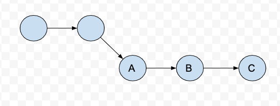

Introduction
Git is a version control system, the author Linus Torvalds is very famous. He is famous by anther system called Linux. Someone may not know him, but I suppose everyone knows Linux. Git is like a state machine which tracks what you have done and makes things safe. When you regret you can go back to history.
Key concepts
The state concept of git is essential for every developer. Here is an image I take from git official website.

git
The three states are modified, staged and committed. Modified means you
have modified files or added new files but have not been using command add to
add those changes in stage. After you git add files, those files are meant
staged. Afterwards, you are ready to commit. committed means your data is
safely stored in your local database. You can find those commits whenever you
want as like checking database.
Let us give several examples. command git status is often use to check status.
Suppose you have not modified anything in your git repository.
git statusthe output will be
nothing to commit, working tree clean.What if you modified somthing?
Changes not staged for commit:
(use "git add <file>..." to update what will be committed)
(use "git checkout -- <file>..." to discard changes in working directory)
modified: sample.txt
no changes added to commit (use "git add" and/or "git commit -a")Notice, the word from working tree clean becomes changes not staged. Now you can stage the modified files.
# add all modified files
git add .The output is
Changes to be committed:
(use "git reset HEAD <file>..." to unstage)
modified: sample.txtThe information git given is quite friendly, it tells you that changes to be committed. Now you are ready to commit your staging files. After committed, your modification is meant safe.
git commit -m "first commit"after committed, if you issue git status you’ll notice that the message becomes
working tree clean again. This is a cycle, we can repeat this cycles as many
times as we want. So where is the record of our modifications? using git log
to check the commits we have done.
Regret medicine
It’s fairly common that we make mistakes when commit or push.
Scenario 1
before staging. Which means you have modified something but have not add to
stage. If you want to discard the change, you can do
# for specific file
git checkout -- filename# for all modified files
git checkout -- .Scenario 2
You have already add to the stage. However, you found something wrong with
it, you want to discard the add action.
# for specific file
git reset HEAD filename# for all staging files
git reset HEAD .Notice, what you have done above will not affect what you have modified. The action just put files from staging to workspace. Your modification is still there.
Scenario 3
You have commit the modification. However, you found this is not a proper commit.
You can use following command to go back the previous commit.
git reset --hard HEAD~This action completely discard what you have modified. However, if we still want to keep the changes but discard current commit?
git reset --soft HEAD~adding extra argument soft will still keep your changes and if you check the status of git you will find that your modified files are in staging area.
If without any arguments attached, the default one is mixed. Which similar like soft, your changed files will still there.
Tips and tricks
Alias
A developer has to use git frequently. Therefore, sometimes, certain git commands seem too lengthy. The way to overcome this is to create alias. There are three ways to create alias.
First, you can set your alias in bashrc file, the syntax is same as set other alias.
alias gst='git status'Or git provides alias functionality as well, for example
git config --global alias.co checkout
git config --global alias.st statusIf you use zsh instead of bash. Zsh provides a plugin call oh-my-zsh, it has git extension which has many git alias created for you.
Add/delete features
In a rapid development environment, business requirements are often unstable. You
may have to implement certain feature but finally is discarded. Clients may change
their mind and you have to retrieve the feature again. There are two useful commands
in git are used to tackle these two issues, git revert and git cherry-pick.
Suppose you have branch like following: 
What if you don’t need feature B? delete B? it seems not a good idea, beacuse you may need the feature B later on as we mentioned above. Moreover, since git is a version control system we want to record history not modify it. Here we can use following command to discard feature B.
git revert Bthen you can get a new commit which only contain feature A and C. However, if your
manager tell you, you have to add feature B back in the feature, what do you do?
write again? not a good idea. Then we have command called git cherry-pick. We
can utilize this command to retrieve history back. First, use git log find the
sha1 of the feature you want to retrieve back, then using following command
git cherry-pick B-sha1Now we have the feature B back. Both actions did not change the history. Nice and cool!